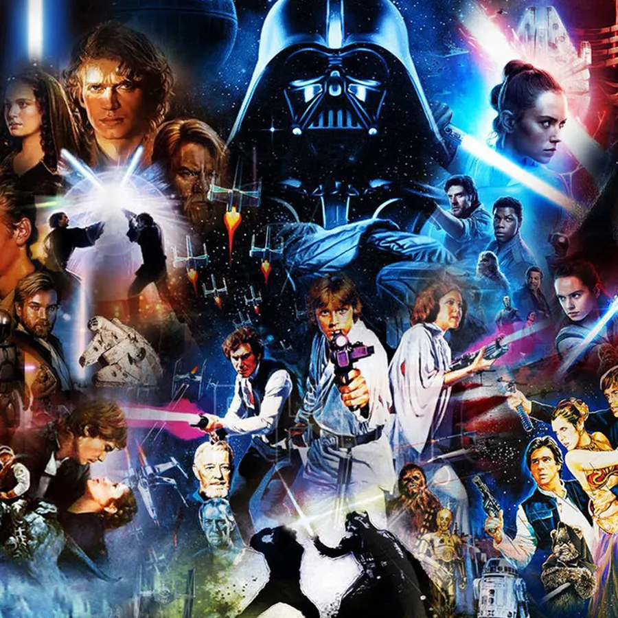

The Star Wars franchise depicts the adventures of characters "A long time ago in a galaxy far, far away", in which humans and many species of aliens (often humanoid) co-exist with robots (typically referred to in the films as 'droids'), who may assist them in their daily routines; space travel between planets is common due to lightspeed hyperspace technology. The planets range from wealthy, planet-wide cities to deserts scarcely populated by primitive tribes. Virtually any Earth biome, along with many fictional ones, has its counterpart as a Star Wars planet which, in most cases, teem with sentient and non-sentient alien life. The franchise also makes use of other astronomical objects such as asteroid fields and nebulae. Spacecraft range from small starfighters, to huge capital ships such as the Star Destroyers, to space stations such as the moon-sized Death Stars. Telecommunication includes two-way audio and audiovisual screens, holographic projections, and HoloNet (internet counterpart).
The universe of Star Wars is generally similar to the real universe but its laws of physics are less strict allowing for more imaginative stories.One result of that is a mystical power known as the Force which is described in the original film as "an energy field created by all living things ... [that] binds the galaxy together". The field is depicted as a kind of pantheistic god. Through training and meditation, those whom "the Force is strong with" exhibit various superpowers (such as telekinesis, precognition, telepathy, and manipulation of physical energy). It is believed nothing is impossible for the Force. The mentioned powers are wielded by two major knightly orders at conflict with each other: the Jedi, peacekeepers of the Galactic Republic who act on the light side of the Force through non-attachment and arbitration, and the Sith, who use the dark side by manipulating fear and aggression. While Jedi Knights can be numerous, the Dark Lords of the Sith (or 'Darths') are intended to be limited to two: a master and their apprentice.
Force-wielders are very limited in numbers in comparison to the population. The Jedi and Sith prefer the use of a weapon called a lightsaber, a blade of plasma that can cut through virtually any surface and deflect energy bolts. The rest of the population, as well as renegades and soldiers, use plasma-powered blaster firearms. As a result of galaxy-scaled politics (involving republics, empires, kingdoms, alliances, etc.), all this weaponry is made use of in various military conflicts during which most Star Wars material takes place. In the outer reaches of the galaxy, crime syndicates such as the Hutt cartel are dominant. Bounty hunters are often employed by both gangsters and governments. Illicit activities include smuggling and slavery.
The combination of science fiction and fantasy elements makes Star Wars a very universal franchise, capable of telling stories of various genres.
